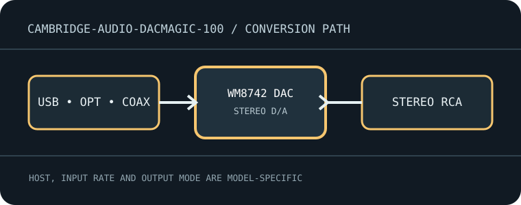

[ INDIVIDUAL MODEL // SOUND HARDWARE ]
Cambridge Audio DacMagic 100
Compact stereo D/A converter with USB, optical and coaxial S/PDIF inputs and a fixed stereo RCA output.

Model-specific specifications
| Exact model / architecture | Stereo digital-to-analog converter built around a Wolfson WM8805 digital receiver and Wolfson WM8742 DAC; no ADC, microphone preamp or headphone amplifier. |
|---|---|
| Digital inputs / interface | USB-B computer audio; one Toslink optical S/PDIF input; two RCA coaxial S/PDIF inputs. No Bluetooth input. |
| Analog / digital outputs | One stereo unbalanced RCA line-output pair; no balanced XLR or headphone socket. |
| Supported formats and rates | Two-channel PCM only. USB Audio Class 1 supports up to 24-bit/96 kHz without the Windows high-rate driver; USB Audio Class 2 supports up to 24-bit/192 kHz with Cambridge driver on Windows. Optical/coaxial accept PCM to 24-bit/192 kHz subject to source/transmitter limits. No DSD or MQA. |
| Power | External 12 V DC adapter (supplied); it is not bus-powered over USB. |
| Drivers / host compatibility | Class-compliant USB Audio Class 1 is suitable for common macOS/Linux hosts and Windows at its class-1 rate. Cambridge Windows driver enables USB Audio Class 2/high-rate operation; check the installed driver and app output mode. |
| Compatibility caveats | This is a stereo line DAC, not a headphone amp or recording interface. S/PDIF transports stereo PCM, not multichannel bitstream decoding; a television/source may need to be set to PCM stereo. |
Compatibility & preservation
This is a stereo line DAC, not a headphone amp or recording interface. S/PDIF transports stereo PCM, not multichannel bitstream decoding; a television/source may need to be set to PCM stereo.
- Record the exact product name, hardware revision, serial range, included power supply, firmware and driver version before service.
- Match digital sample format/rate to the selected physical input and host mode; set downstream amplifier level safely before playback.
- Keep the model-specific manufacturer manual with the device; connector shape alone does not guarantee electrical or protocol compatibility.
Manufacturer sources
- DacMagic 100 manufacturer support pageManufacturer product documentation for the exact model and its revision-specific operation/specifications.
- Official DacMagic 100 user manualManufacturer product documentation for the exact model and its revision-specific operation/specifications.